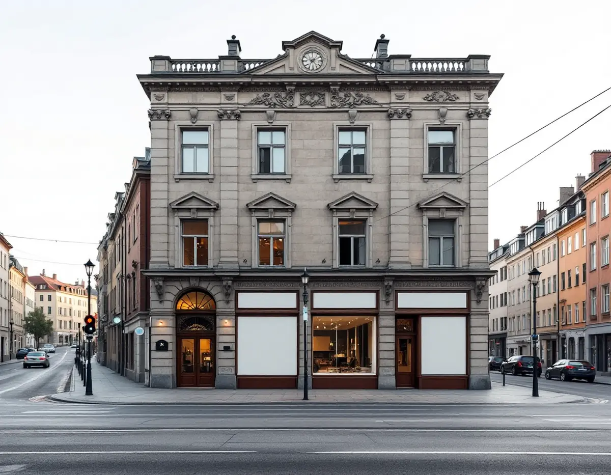
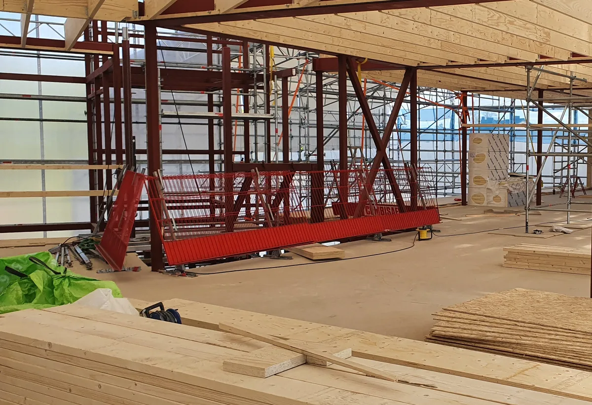
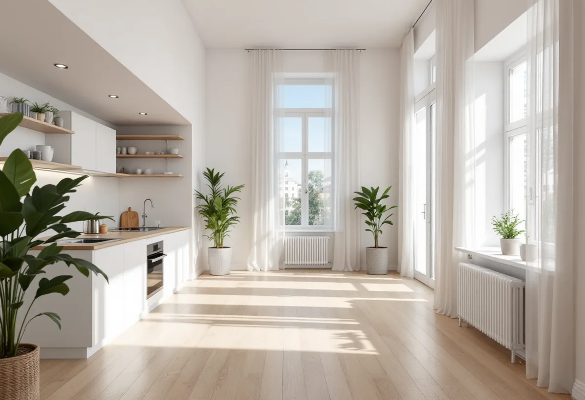

Platsbesök
Vi tittar på lokalen, rumshöjden, ljuset och installationerna.

I Vasastans stenhus finns butiker, kontor och lager i gatuplanet och källaren, och ibland vill en förening eller fastighetsägare göra om en sådan lokal till bostad.
Beskriv jobbet kort.
Något blev fel. Kontrollera uppgifterna eller ring 08 12 410 276.
Vi tittar på jobbet på plats innan du får offert.
Du ser vad som ingår och vad det kostar.
Vi drar av ROT direkt och sköter ansökan.
Geal Entreprenad AB, Bromma. Org.nr 559303-7566.

Geal Entreprenad AB bygger om lokaler till bostäder som total entreprenad och börjar med lovfrågan.
Stockholms stads områdesfakta för 2024 visar att bostadsrätten dominerar. I församlingsområdet Gustav Vasa var 5 707 av omkring 8 900 bostäder bostadsrätter, och i Västra Matteus 8 990 av omkring 12 600.
I husen finns ofta lokaler som föreningen eller fastighetsägaren hyr ut. När en lokal står tom väcks frågan om den kan bli en bostad, men det är en av de ändringar där lovfrågan avgör allt.

Stockholms stad förklarar att du behöver bygglov för att avsevärt ändra användningen av en byggnad eller en del av den. Kravet hänger ihop med om ändringen räknas som väsentlig, och det är en bedömningsfråga. Bygglov kan behövas även om du inte gör några inredningsåtgärder.
Staden ger exempel som alltid kräver bygglov, bland annat förskola till bostad och bostad till kontor. Ska en lokal bli en eller flera bostäder hänger lovplikten dessutom ihop med reglerna om att inreda ytterligare bostad.
Det är den senaste faktiska användningen som avgör om bygglov behövs. Det kan vara en pågående användning eller den senast kända, oberoende av om det fanns bygglov för den.
När du söker ska både den senaste kända användningen och den nya redovisas. Har lokalen varit kontor i tjugo år, trots att den en gång byggdes som bostad, är det alltså kontoret som är utgångspunkten. Vi tar reda på historiken via stadens ritningsarkiv och tidigare ärenden innan ansökan skrivs.
Staden skriver att en ny bostad ska uppfylla dagens krav, till exempel på tillgänglighet, brandsäkerhet, rumshöjd och bostadsutformning. Till bostaden ska det finnas tillgängliga bostadskomplement som lägenhetsförråd, tvättstuga och förvaring för barnvagnar och cyklar.
I en gatuplanslokal blir ljuset, insynen från gatan och ljudet de stora frågorna, och i en källarlokal rumshöjden och fukten. Vi går igenom sådana förutsättningar innan styrelsen lägger pengar på projektering. Ibland visar det sig att lokalen passar bättre för en annan användning, och då är det bra att veta det innan ansökan skickas. Ibland räcker det med mindre ändringar för att en bostad ska fungera riktigt bra.
En lokal och en bostad ställer olika krav på avskiljning. Staden förklarar att lägenheter är egna brandceller, och att ändringar i byggnadens brandcellsindelning påverkar brandskyddet och kräver anmälan. När en lokal blir en eller flera bostäder behöver väggar, bjälklag och dörrar mot trapphuset ses över.
Ljudet är den andra frågan. En lokal under en lägenhet är inte självklart byggd för att ljudet mellan två hem ska hållas nere. Vi låter en sakkunnig bedöma brand och ljud tidigt, eftersom de lösningarna styr både planlösning och kostnad.
Är det föreningen som äger lokalen fattar styrelsen och stämman besluten enligt stadgarna. Vi tar fram ett underlag med lovfrågan, kraven på bostaden och ett kostnadsförslag som styrelsen kan presentera för medlemmarna.
Om att renovera befintliga lägenheter i Vasastan kan du läsa under totalrenovering i Vasastan, och om badrum under badrumsrenovering i Vasastan.
Vi tittar på lokalen, rumshöjden, ljuset och installationerna.
Senaste användning, ritningar och detaljplan reds ut.
Bygglov för ändrad användning med ritningar och kontrollansvarig.
Varje del står för sig, som underlag för styrelsen.
Arbetet startar när startbeskedet finns.
Intyg och dokumentation lämnas inför inflyttningen.
En ombyggnad som föreningen eller fastighetsägaren bekostar ger inget rotavdrag. Skatteverket ger avdrag till privatpersoner för arbete i deras egen bostad.
Den som sedan bor i lägenheten kan få avdrag för egna arbeten i den. Rotavdraget är 30 procent av arbetskostnaden, högst 50 000 kronor per person och år och högst 75 000 kronor tillsammans med rutavdrag. Material och resor ger inget avdrag, och du ska äga bostaden när arbetet utförs.
Lokalens storlek och skick, nya installationer för kök och badrum, ljud och brand mot grannarna och om fasaden ändras. Efter ett gratis platsbesök får du ett skriftligt kostnadsförslag.
Total entreprenad för villan.
Byggfirma →Takbyte, takbesiktning och plåtarbeten.
Takläggare i Vasastan →Stenstad, Röda Bergen och föreningarnas tak.
Takrenovering i Vasastan →Flytta badrummet, ny stam och frånluft.
Badrumsrenovering i Vasastan →Fasadmålning för föreningar.
Fasadmålning i Vasastan →Ställning, tillstånd och etablering på gatan.
Fasadrenovering i Vasastan →Storgårdskvarteren och 20-talets fönster.
Fönsterbyte i Vasastan →Fönster i Birkastadens jugendhus.
Fönsterrenovering i Vasastan →Springor, kupning och underhåll.
Golvläggare i Vasastan →Stav- och fiskbensparkett.
Golvslipning i Vasastan →Kokvrån som blir kök.
Köksrenovering i Vasastan →Snickerier, fönster och sprucket spackel.
Målare i Vasastan →Takfönster, vindar och plåt.
Plåtslagare i Vasastan →Öppna upp, nya dörröppningar och listverk.
Snickare i Vasastan →Takbyte för föreningar och fastighetsägare.
Takbyte i Vasastan →Ny tapet på gamla putsväggar.
Tapetsering i Vasastan →Hela lägenheten, med husets värden kvar.
Totalrenovering i Vasastan →Eller ring 08 12 410 276, mån–fre 08–17.
Beskriv jobbet kort.
Något blev fel. Kontrollera uppgifterna eller ring 08 12 410 276.